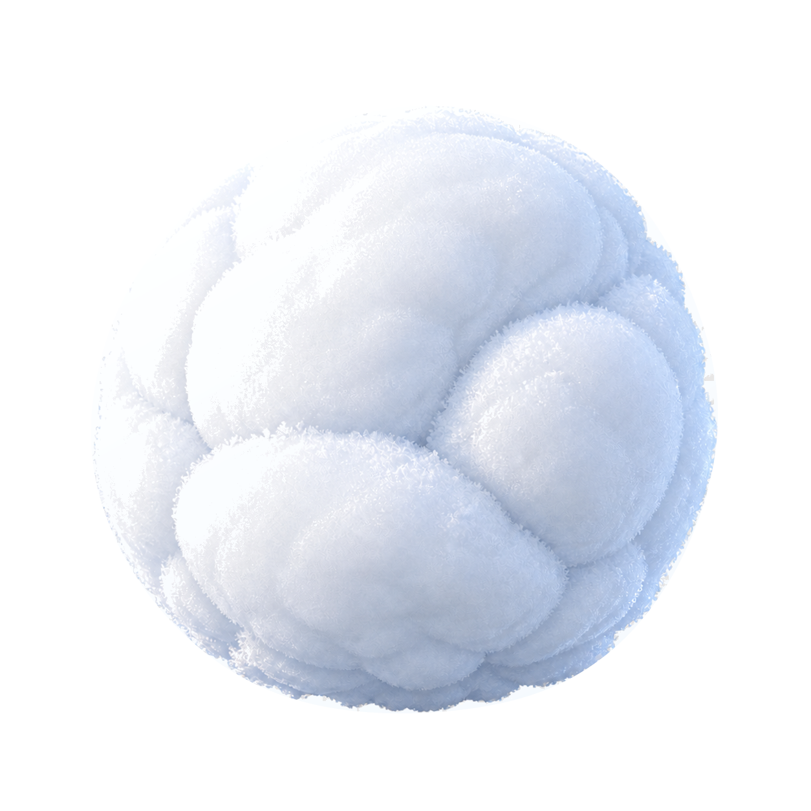

Candidate A · Friendliest mass
Avalanche Pillow
A few enormous powder lobes press into deep seams over a dense lower body. It carries the clearest Powder Nest lineage while moving from cozy clumps to load-bearing masses.
96px check: broad lobe rhythm and heavy base remain legible.